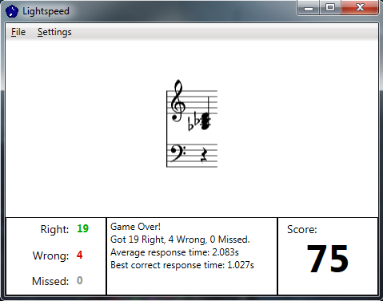

A game that helps you learn to read music.
Lightspeed is a game that will help you learn sight reading. It shows flashcards with notes, intervals and triads and you earn points by hitting the correct notes on your MIDI keyboard as quickly as possible. At the end of each round you get a point score and an average response time. How high can you score? What's your best response time?

To play Lightspeed you need a computer running Windows. The game features an on-screen keyboard or you can play using a real keyboard with MIDI. This requires some way to plug your MIDI keyboard into your computer. Lots of newer keyboards these days can connect directly to a computer via USB - if yours doesn't, you can use one of these USB to MIDI cables.
Lightspeed is a work in progress and is developed by me in my spare time. If you need help just send me an email at orr.james@gmail.com. If you've got some feedback I'd love to hear from you!
If you're a programmer and you'd like to help out, check out the project on GitHub.